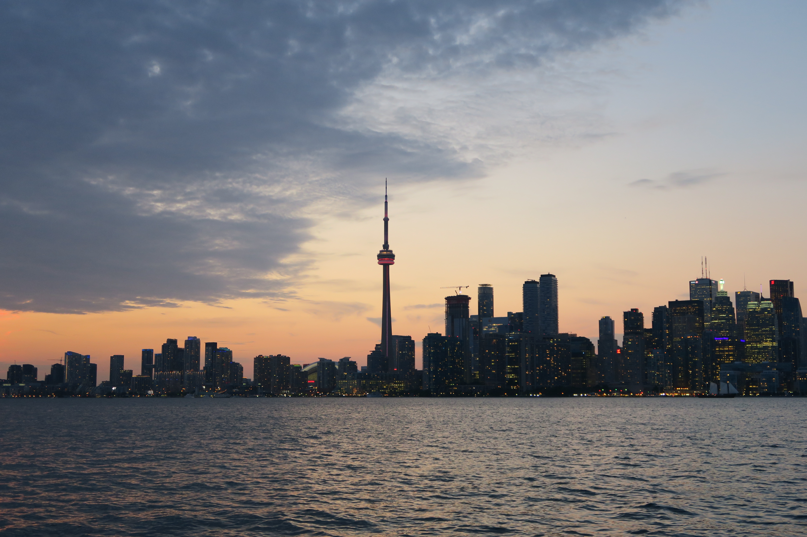
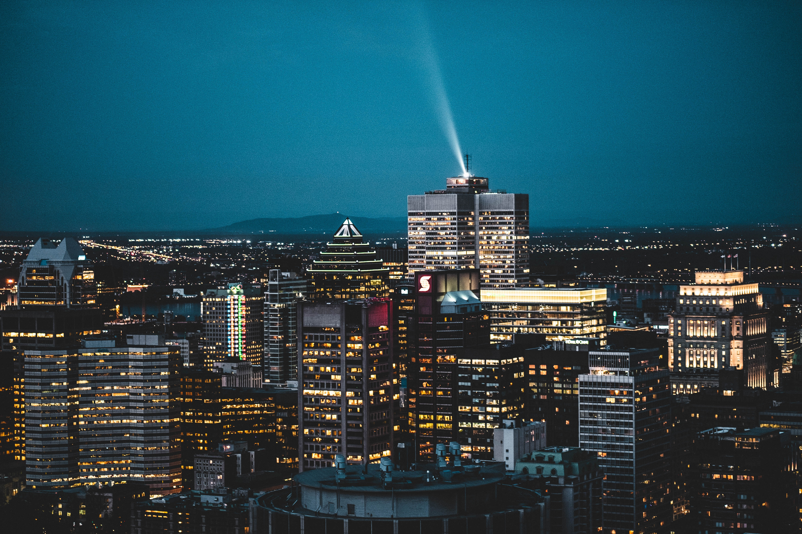

Home
Asia
America
Europe
Discover America's Hidden Treasures:
Canada, Brazil, and United States
CANADA

TORONTO
Toronto is known for its many skyscrapers and high-rise buildings, in particular the tallest free-standing structure on land outside of Asia, the CN Tower.

MONTREAL
Montréal is the largest city in the province of Québec, the second largest in Canada, and the largest francophone city in the world after Paris.

QUEBEC
Quebec is a vibrant multicultural province, often earning it recognition as the “Europe of North America”. Quebec is also famous for its vast forests, rolling hills and countless waterways.
Brazil

RIO DEO JANEIRO
Rio de Janeiro is the second largest city in Brazil, on the South Atlantic coast. Rio is famous for its breathtaking landscape,
its laid-back beach culture and its annual carnival.

FERNANDO DE NORONHA
The Fernando de Noronha and Rocas Atoll are key sites for the protection of biodiversity and endangered species in the Southern Atlantic.

AMAZON
The tropical rainforest is a hot, moist biome where it rains all year long. It is known for its dense canopies of vegetation that form three different layers.
United States

SAN FRANCISCO
The city is known for its steep rolling hills and eclectic mix of architecture across varied neighborhoods, as well as its cool summers,
fog, and landmarks, including the Golden Gate Bridge, cable cars, Alcatraz, along with the Chinatown and Mission districts.

NEW YORK
New York City is a global city and a cultural, financial, high-tech, entertainment, and media center with a significant influence
on commerce, health care and scientific output in life sciences, research, technology, education, politics, tourism, dining, art, fashion, and sports.

CHICAGO
Chicago is known for its jaw-dropping architecture, vibrant music scene, amazing food, — including deep-dish pizza — and iconic neighborhoods.